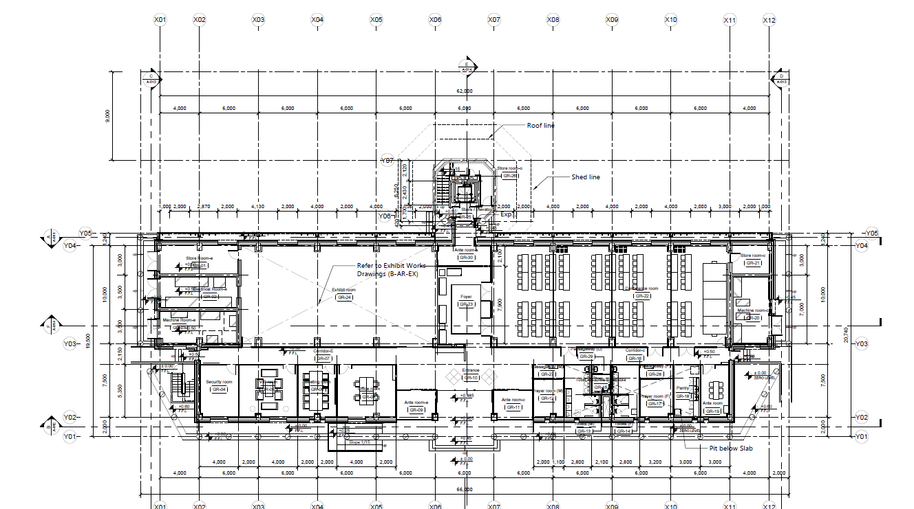
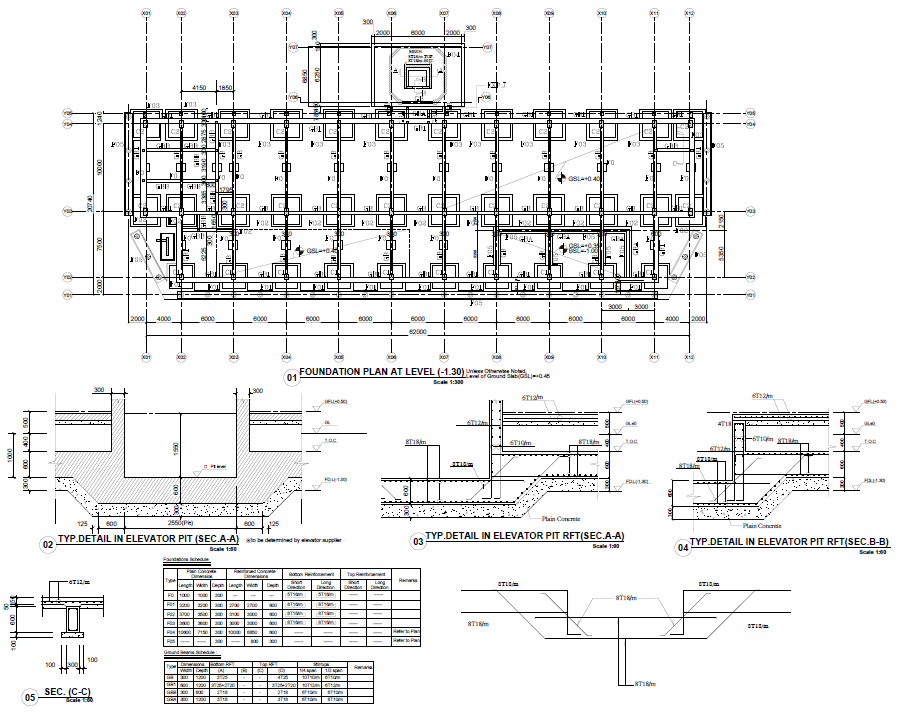

AUTOSHIFT X
Webアプリケーション / シフト自動作成システム
Web Design / Coding開発環境：Figma / WordPress / PHP（AI活用）制作期間：11日 デザインワイヤーフレーム、コーディング技術的挑戦：業務スキル・勤務パターン・人員配置が絡み合う複雑なシフト自動作成ロジックを調整
MIYUKI IMAKAWA / PORTFOLIO / 2026
建築実務で長年培った課題解決力と、リスキリングで習得したWeb・AI・開発スキル。
コーディングから複雑な業務ロジックの効率化まで、実務に直結する成果をスピーディに形にします。
SELECTED WORKS
学びの中で習得した技術をベースに、異なる業種における具体的なターゲット層や利用シーンを想定しUI/UX、動線設計を実践して制作したWebサイトです。
これからはWeb制作に加え、AI開発や運用管理の領域にも取り組み、実務を支える仕組みづくりに貢献してまいります。画像をクリックして、実際の動作をご確認ください
Webアプリケーション / シフト自動作成システム
Web Design / Coding開発環境：Figma / WordPress / PHP（AI活用）制作期間：11日 デザインワイヤーフレーム、コーディング技術的挑戦：業務スキル・勤務パターン・人員配置が絡み合う複雑なシフト自動作成ロジックを調整
建設会社サイト
Web Design / Coding実装形式：Figma / HTML / CSS / JavaScript（AI活用）制作期間：10日 デザインワイヤーフレーム、コーディング技術的挑戦：建設施工を紹介するスライダーと、ヘッダーナビゲーションの表示を工夫
ブランドサイト
Web Design / Coding開発環境：Figma / HTML / CSS / JavaScript（AI活用）制作期間：3日 デザインワイヤーフレーム、コーディング技術的挑戦：スマートフォンでのスワイプ操作を実装し、JavaScriptで動作を調整
サロンサイト
Web Design / Coding実装形式：Figma / HTML / CSS / JavaScript（AI活用）制作期間：5日 デザインワイヤーフレーム、コーディングこだわり：ファーストビューに動くバナーを配置。
スワイプ操作をJavaScriptで調整し、視覚的なインパクトと続きを見たくなる構成を目指しました
コンセプトサイト
Web Design / Coding実装形式：Figma / HTML / CSS / JavaScript（AI活用）制作期間：10日 デザインワイヤーフレーム、コーディングこだわり：里親募集の絞り込みフィルターを実装。検索しやすさを考え、カードのレイアウトと情報量のバランスを調整しました
MY STRENGTHS
長年積み重ねた実務の「正確さ」を土台に
AIと新しい技術を自在に組み合わせ、確実な成果へと導くパートナーです
目的に応じてAIを実務の力に。リサーチからコーディングまでの工程をスピーディーに効率化しながら、最終品質はプロの目でしっかりと仕上げます。
長年の建築図面作成の現場で培った、複雑な要件を読み解き情報を正確に組み立てる力。Webの設計や情報整理にも直結する、ブレない構成力を発揮します。
Webデザイン・実装の技術を一から習得。長年の実務経験と新しい技術を掛け合わせ、変化の早いWebの現場でスピーディーに形にします
DRAWING ARCHIVE
建築図面で磨き上げた「正確な情報把握」と「最後まで形にする実行力」。複雑な情報を整理し、迷いのない動線を構築するスキルは、現在のWeb制作における大きな強みとなっています。


WORK PROCESS
AIの力でリサーチや制作をスピーディーに進めつつ、プロジェクトの要所ではプロの目で厳しくコントロールする。長年の図面づくりで身につけた綿密な段取りとチェック体制が、確実なWeb制作を支えます。
目的・課題・利用者を整理
情報と導線を構造化
調査・提案・制作を加速
人の目で品質を確認
ABOUT ME
建築業界で長きにわたり図面作成に携わってきました。培った緻密な情報整理力と、リスキリングで体得したWebデザイン・AI活用のスキル。長年の実務経験に新しい技術を掛け合わせることで、変化の早いWebの現場で「確実でスピーディーなものづくり」を実践します。